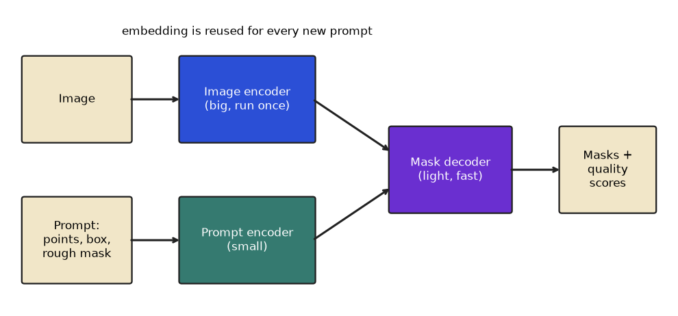

In this chapter
- 9.1 Boxes, IoU and Non-Maximum Suppression
- 9.2 Evaluating Detectors: Precision, Recall, AP and mAP
- 9.3 Detector Families: R-CNN, SSD, YOLO and DETR
- 9.4 Segmentation: Semantic, Instance, Panoptic, U-Net and SAM
- 9.5 OCR and Other Vision Tasks
- 9.6 Modern Detection and Segmentation Details: COCO mAP, Anchor-Free Decoding, ROIAlign and SAM
- Chapter recap
- Practice set
- Prompt pack
A classifier says "this photo contains a car". A real product asks harder questions: where is each car, how many are there, which pixels belong to the road, what does the number plate say? A warehouse camera must count boxes, a bank must read cheques, and a hospital tool must outline a tumour. This chapter teaches the three jobs that answer those questions: detection (a box and a label per object), segmentation (a label per pixel) and OCR (reading text). The most important skill is judging the result, so we compute IoU, precision-recall, AP and mAP by hand and in code. By the end you will be able to read a detection paper's results table, explain how YOLO, DETR, U-Net and SAM differ, and decide which tool fits a business problem. We build on Chapter 6 (CNN backbones), Chapter 7 (pretrained backbones and fine-tuning) and Chapter 8 (thresholding, morphology, connected components for cleaning masks). Transformers in DETR and SAM are taught in Chapters 11 and 12.
torchvision, ultralytics, Tesseract and EasyOCR are not installed where this chapter was written. All numbers below come from NumPy code I ran. Library code is short, standard and marked "not run here". The helper iou defined in Section 9.1 is reused by later snippets.9.1 Boxes, IoU and Non-Maximum Suppression
Words you need
| Word | Plain meaning |
|---|---|
| Bounding box | A rectangle around an object, written (x1, y1, x2, y2) (top-left and bottom-right corners) |
| Ground truth (GT) | The correct boxes drawn by human labellers |
| Prediction | A box from the model, with a class and a confidence score between 0 and 1 |
| IoU (intersection over union) | area of overlap / area of union of two boxes (or two masks) |
| NMS (non-maximum suppression) | Cleanup step that removes duplicate boxes for the same object |
| Anchor | A reference box shape (for example tall and thin) that older detectors adjust to fit objects |
Image coordinates start at the top-left: x grows to the right, y grows downwards. Box formats differ: Pascal VOC uses (x1, y1, x2, y2) in pixels, COCO uses (x, y, width, height) in pixels, YOLO text files use (class, x_centre, y_centre, width, height) normalised to 0 to 1. Mixing formats is a classic silent bug.
Problem 9.1.1 Compute the IoU of ground truth (10, 10, 50, 50) and prediction (30, 20, 70, 60).
| Formula | IoU = intersection / (area A + area B − intersection). |
|---|---|
| Step 1 | Overlap rectangle: left edge max(10, 30) = 30, top max(10, 20) = 20, right min(50, 70) = 50, bottom min(50, 60) = 50. Width 50 − 30 = 20, height 50 − 20 = 30, so intersection = 20 × 30 = 600. |
| Step 2 | Areas: GT 40 × 40 = 1600, prediction 40 × 40 = 1600. |
| Step 3 | Union = 1600 + 1600 − 600 = 2600. |
| Answer | IoU = 600 / 2600 = 0.2308. |
| Check | If the boxes were disjoint, max(0, ...) makes the intersection 0 and IoU 0. If identical, intersection equals both areas, IoU 1. The code prints 0.0 and 1.0 for those. |
| Interpretation | The prediction is the right size but shifted by 20 and 10 pixels, and the score is only 0.23: a fail by any normal standard. The usual bar for "correct" is IoU of at least 0.5. |

How to read it: blue is the ground truth, orange is the prediction, green is the overlap. The text on the right repeats the arithmetic: overlap 600, union 2600, IoU 0.2308.
Before you run it, predict: if the prediction is the GT shifted right by only 5 pixels, will the IoU be above 0.7? What about a shift of 10 pixels?
import numpy as np
def iou(a, b):
"""boxes are (x1, y1, x2, y2) with x1<x2, y1<y2"""
ix1, iy1 = max(a[0], b[0]), max(a[1], b[1])
ix2, iy2 = min(a[2], b[2]), min(a[3], b[3])
inter = max(0, ix2 - ix1) * max(0, iy2 - iy1)
area = lambda r: (r[2] - r[0]) * (r[3] - r[1])
return inter / (area(a) + area(b) - inter)
gt = (10, 10, 50, 50)
pred = (30, 20, 70, 60)
print("IoU", round(iou(gt, pred), 4))
print("identical", iou(gt, gt), " disjoint", iou(gt, (60, 60, 90, 90)))
print("shifted by 5 px:", round(iou(gt, (15, 10, 55, 50)), 4), " by 10 px:", round(iou(gt, (20, 10, 60, 50)), 4))IoU 0.2308
identical 1.0 disjoint 0.0
shifted by 5 px: 0.7778 by 10 px: 0.6Line by line. ix1, iy1 take the larger of the left and top edges; ix2, iy2 take the smaller of the right and bottom edges; max(0, ...) handles boxes that do not overlap (a negative width would otherwise give a false positive area). With a shift of 5 pixels on a 40-pixel box: overlap 35 × 40 = 1400, union 1600 + 1600 − 1400 = 1800, IoU 0.7778. A shift of 10 pixels gives overlap 30 × 40 = 1200, union 2000, IoU 0.6. So being off by one quarter of the box width still passes the 0.5 bar. IoU is also used for masks (Section 9.4), where "area" means pixel count.
Non-maximum suppression (NMS)
A detector looks at thousands of positions, so it often fires several times on one object. NMS keeps the best box and deletes its near-copies:
- Sort boxes by confidence, highest first.
- Keep the top box. Delete every remaining box whose IoU with it is above a threshold (commonly 0.5).
- Repeat with the next remaining box.
Problem 9.1.2 Five boxes with scores 0.90, 0.80, 0.70, 0.85, 0.60. Box 0 (10,10,50,50), box 1 (12,12,52,52), box 2 (14,8,54,48), box 3 (100,100,140,140), box 4 (30,30,70,70). Run NMS at threshold 0.5.
| Step 1 | Highest score is box 0 (0.90): keep it. |
|---|---|
| Step 2 | IoU of box 0 with box 1: overlap 38 × 38 = 1444, union 1600 + 1600 − 1444 = 1756, IoU 0.822. This is above 0.5, so box 1 is deleted. With box 2: 0.747, deleted. With box 4: overlap 20 × 20 = 400, union 2800, IoU 0.143, kept for now. |
| Step 3 | Next highest remaining: box 3 (0.85), far away, keep it. Then box 4 (0.60), keep it. |
| Answer | Kept boxes: 0, 3, 4. Two duplicates (1 and 2) were removed. |
| Check | The code prints the same IoUs and kept at 0.5: [0, 3, 4]. With threshold 0.9 nothing is removed, because no duplicate overlaps that much. |
| Interpretation | The threshold is a tuning choice. Too low: two real, touching objects (a crowd) are merged into one. Too high: duplicates survive and count as false positives. DETR (Section 9.3) removes the need for NMS. |
def nms(boxes, scores, thr=0.5):
order = list(np.argsort(scores)[::-1]); keep = []
while order:
i = order.pop(0); keep.append(int(i))
order = [j for j in order if iou(boxes[i], boxes[j]) < thr]
return keep
boxes = [(10,10,50,50), (12,12,52,52), (14,8,54,48), (100,100,140,140), (30,30,70,70)]
scores = np.array([0.90, 0.80, 0.70, 0.85, 0.60])
for j in (1, 2, 4): print(f"IoU(box0, box{j}) = {iou(boxes[0], boxes[j]):.3f}")
print("kept at 0.5:", nms(boxes, scores, 0.5))
print("kept at 0.9:", nms(boxes, scores, 0.9))IoU 0.2308
identical 1.0 disjoint 0.0
shifted by 5 px: 0.7778 by 10 px: 0.6
IoU(box0, box1) = 0.822
IoU(box0, box2) = 0.747
IoU(box0, box4) = 0.143
kept at 0.5: [0, 3, 4]
kept at 0.9: [0, 3, 1, 2, 4]Real-world mapping
| Concept | Example value | Where it appears in the job |
|---|---|---|
| IoU threshold | 0.5 (PASCAL), 0.5 to 0.95 (COCO) | Deciding what counts as a correct detection |
| NMS threshold | 0.45 to 0.7 | An inference setting you tune for crowded versus sparse scenes |
| Box format | VOC, COCO, YOLO | Converting labelling-tool exports to training format |
| Confidence threshold | 0.25 to 0.5 | Operating point: fewer false alarms versus fewer misses |
Applications
- Retail: count products on shelves; flag empty slots.
- Manufacturing: locate defects, then measure their size.
- Traffic and smart cities: vehicles and pedestrians counted per lane.
- Healthcare: find nodules in scans for a doctor to review.
- MLOps: monitoring box-size and score distributions in production to detect drift.
(x, y, w, h) with (x1, y1, x2, y2). If IoU of a prediction with itself is not 1.0, or IoU values look absurdly low, check formats first. Also remember y grows downwards, so "top" has the smaller y.Check yourself
- IoU of two identical boxes? Answer: 1.
- Two boxes of area 100 overlap on 50. IoU? Answer:
50 / (100 + 100 − 50) = 0.333. - What does NMS delete? Answer: lower-scoring boxes that overlap a higher-scoring box above the IoU threshold.
9.2 Evaluating Detectors: Precision, Recall, AP and mAP
Words you need
| Word | Plain meaning |
|---|---|
| True positive (TP) | A prediction with the right class and IoU at or above the threshold with a GT box that no other prediction has already claimed |
| False positive (FP) | A prediction that matches nothing (wrong place, wrong class, or a duplicate) |
| False negative (FN) | A real object no prediction found |
| Precision | TP / (TP + FP): of the boxes I drew, how many are right |
| Recall | TP / (TP + FN): of the real objects, how many did I find |
| AP (average precision) | Area under the precision-recall curve for one class |
| mAP | Mean of AP over all classes (and, in COCO, over IoU thresholds too) |
You know precision and recall from the machine-learning document; the new idea is that for detection, "correct" needs the IoU test, and the score ranking turns one operating point into a whole curve.
Procedure
- For one class, sort all predictions in the whole test set by confidence, highest first.
- Walk down the list. Mark each prediction TP or FP using IoU ≥ 0.5 (each GT box can be matched only once).
- After each step, compute cumulative precision
cumTP / (cumTP + cumFP)and recallcumTP / total GT. - Make the precision values non-increasing (replace each by the largest precision to its right: the "envelope"), then add up
Δrecall × precisionover the steps.
Problem 9.2.1 The test set has 4 real cars. The detector gives 6 car predictions, ranked by confidence, judged TP, TP, FP, TP, FP, TP. Compute precision, recall and AP at IoU 0.5.
| Step 1 | After rank 1: TP=1, FP=0: precision 1/1 = 1.0, recall 1/4 = 0.25. Rank 2: TP=2, precision 2/2 = 1.0, recall 0.5. |
|---|---|
| Step 2 | Rank 3 is an FP: TP=2, FP=1, precision 2/3 = 0.667, recall 0.5 (unchanged). Rank 4 TP: TP=3, FP=1, precision 3/4 = 0.75, recall 0.75. |
| Step 3 | Rank 5 FP: precision 3/5 = 0.6, recall 0.75. Rank 6 TP: TP=4, FP=2, precision 4/6 = 0.667, recall 1.0. |
| Step 4 | Envelope (largest precision to the right): 1.0, 1.0, 0.75, 0.75, 0.667, 0.667. |
| Step 5 | AP = sum over recall steps: 0.25 × 1.0 + 0.25 × 1.0 + 0.25 × 0.75 + 0.25 × 0.667 = 0.25 + 0.25 + 0.1875 + 0.1667 = 0.8542. |
| Answer | AP at IoU 0.5 for "car" is 0.854. |
| Check | AP must lie between final precision (0.667) and 1.0. Perfect ranking (all TP first) would give exactly 1.0. The code prints AP@0.5 = 0.8542. |
| Interpretation | The detector finds all four cars, but two wrong boxes with fairly high scores (ranks 3 and 5) pull AP down. Raising the confidence threshold would remove them at the cost of recall. |
Before you run it, predict: if the list were TP, TP, TP, TP, FP, FP, what would AP be?
# 6 detections for class "car", ranked by confidence; 4 real cars in the dataset
tp = np.array([1, 1, 0, 1, 0, 1]) # 1 = matched a real car with IoU >= 0.5 (not already matched)
n_gt = 4
ctp = tp.cumsum(); cfp = (1 - tp).cumsum()
prec = ctp / (ctp + cfp); rec = ctp / n_gt
print("rank ", np.arange(1, 7))
print("precision ", prec.round(3))
print("recall ", rec.round(3))
# AP = area under the precision envelope (all-point interpolation)
mrec = np.concatenate([[0], rec, [1]]); mpre = np.concatenate([[0], prec, [0]])
for i in range(len(mpre) - 2, -1, -1): mpre[i] = max(mpre[i], mpre[i + 1]) # make precision non-increasing
idx = np.where(mrec[1:] != mrec[:-1])[0]
ap = ((mrec[idx + 1] - mrec[idx]) * mpre[idx + 1]).sum()
print("envelope ", mpre[1:-1].round(3))
print("AP@0.5 =", round(float(ap), 4))IoU 0.2308
identical 1.0 disjoint 0.0
shifted by 5 px: 0.7778 by 10 px: 0.6
rank [1 2 3 4 5 6]
precision [1. 1. 0.667 0.75 0.6 0.667]
recall [0.25 0.5 0.5 0.75 0.75 1. ]
envelope [1. 1. 0.75 0.75 0.667 0.667]
AP@0.5 = 0.8542Line by line. cumsum gives running TP and FP counts. We pad with 0 at the start and the end, then the for loop walks from the right and sets each precision to the maximum of itself and everything to its right (the envelope). idx finds the places where recall changes, and the sum multiplies each recall step by the envelope precision there. (The answer to the prediction: with TP, TP, TP, TP, FP, FP recall reaches 1.0 at rank 4 with precision 1.0, so AP = 1.0; the later false positives come too late to matter. Ranking matters, not just counts.)
From AP to mAP
mAP@0.5 (the older PASCAL VOC style) averages AP over classes at IoU 0.5. mAP@[.5:.95] (COCO style, often just "mAP" or "AP") also averages over ten IoU thresholds 0.50, 0.55, ..., 0.95, so it rewards tight boxes. COCO also reports AP for small, medium and large objects, and AP at 0.5 and 0.75 separately. Always check which definition a paper or tool uses before comparing numbers.
Problem 9.2.2 Three classes have AP@0.5 of 0.8542 (car, from above), 0.80 (person), 0.55 (dog). What is mAP@0.5? Then a model has AP over the ten COCO thresholds of 0.80, 0.77, 0.73, 0.68, 0.62, 0.55, 0.46, 0.35, 0.21, 0.07 (made-up numbers for practice). What is mAP@[.5:.95]?
| Formula | mean = sum / count. |
|---|---|
| Step 1 | (0.8542 + 0.80 + 0.55) / 3 = 2.2042 / 3 = 0.7347. |
| Step 2 | Sum of the ten AP values: 0.80 + 0.77 + 0.73 + 0.68 + 0.62 + 0.55 + 0.46 + 0.35 + 0.21 + 0.07 = 5.24; divided by 10 is 0.524. |
| Answer | mAP@0.5 is 0.735. The COCO-style mAP is 0.524. |
| Check | The code below prints mAP@0.5 = 0.7347 and mAP@[.5:.95] = 0.524. |
| Interpretation | The same model gets 0.80 at the loose bar and only 0.07 at the strictest bar: it finds objects but draws them loosely. A COCO mAP of 0.524 is much lower than an mAP@0.5 of 0.80, so never compare the two directly. |
ap_car, ap_person, ap_dog = 0.8542, 0.80, 0.55 # AP@0.5 per class (car = the 0.8542 computed above; the other two are made-up)
print("mAP@0.5 =", round((ap_car + ap_person + ap_dog) / 3, 4))
# COCO style: average AP over IoU thresholds 0.50, 0.55, ..., 0.95 (made-up values that fall as the bar rises)
ap_by_thr = np.array([0.80, 0.77, 0.73, 0.68, 0.62, 0.55, 0.46, 0.35, 0.21, 0.07])
print("thresholds", np.round(np.arange(0.5, 1.0, 0.05), 2))
print("mAP@[.5:.95] =", round(float(ap_by_thr.mean()), 3))IoU 0.2308
identical 1.0 disjoint 0.0
shifted by 5 px: 0.7778 by 10 px: 0.6
mAP@0.5 = 0.7347
thresholds [0.5 0.55 0.6 0.65 0.7 0.75 0.8 0.85 0.9 0.95]
mAP@[.5:.95] = 0.524Real-world mapping
| Concept | Example value | Where it appears in the job |
|---|---|---|
| Precision-recall curve | one curve per class | Choosing a confidence threshold for production |
| mAP@0.5 | 0.735 | Quick comparison of two models on one dataset |
| mAP@[.5:.95] | 0.524 | Papers and leaderboards (COCO) |
| Per-class AP | dog 0.55 | Finding the classes that need more data |
Applications
- Model selection: compare YOLO sizes on your own validation set by mAP and speed.
- Safety systems: pick a threshold that keeps recall above a required level, then report precision.
- Data work: per-class AP and the most confident false positives point to label errors.
- MLOps: track mAP on a fixed golden set for every new model version.
Check yourself
- If a detector draws one extra box on a real object that is already matched, is it TP or FP? Answer: FP (a duplicate).
- Why does mAP@[.5:.95] come out lower than mAP@0.5? Answer: it includes strict IoU thresholds like 0.9 and 0.95 that few boxes pass.
- Does a high-confidence false positive hurt AP more than a low-confidence one? Answer: yes, because it appears early in the ranking and lowers precision at more recall levels.
9.3 Detector Families: R-CNN, SSD, YOLO and DETR
Two-stage detectors: the R-CNN family
- R-CNN (2014): propose about 2,000 regions with an old algorithm (selective search), run a CNN on each crop separately, classify with an SVM and adjust the box. Accurate but extremely slow, because the CNN ran 2,000 times per image.
- Fast R-CNN: run the CNN once on the whole image to get a feature map, then pool the features inside each proposed region (RoI pooling) into a fixed size.
- Faster R-CNN: replace the old proposal algorithm with a small network, the Region Proposal Network (RPN), that scores a set of anchor boxes at each position of the feature map and proposes regions. Detection became end to end and much faster. It remains a strong, accurate baseline.
- Mask R-CNN: Faster R-CNN plus a third branch that predicts a pixel mask inside each box (instance segmentation, Section 9.4), and RoIAlign to avoid rounding errors.
One-stage detectors: SSD, RetinaNet, YOLO
One-stage detectors skip proposals and predict boxes and classes directly from the feature map.
- SSD predicts boxes from several feature-map scales so it can find both small and large objects.
- RetinaNet introduced focal loss: it down-weights the huge number of easy background examples so that training focuses on hard ones. (Remember cross-entropy from the Math PDF; focal loss multiplies it by
(1 − p)^γ.) - YOLO ("You Only Look Once") divides the image into a grid. Each cell is responsible for objects whose centre falls inside it.
Problem 9.3.1 YOLO-style assignment. The image is 448×448 and the grid is 7×7 (each cell is 64 pixels). An object box is (100, 150, 260, 330). Which cell is responsible, and what are its targets?
| Step 1 | Centre: x = (100 + 260)/2 = 180, y = (150 + 330)/2 = 240. Box width 160, height 180. |
|---|---|
| Step 2 | Cell: column = floor(180 / 64) = 2, row = floor(240 / 64) = 3. So cell (row 3, col 2). |
| Step 3 | Position inside the cell: x = 180/64 − 2 = 0.8125, y = 240/64 − 3 = 0.75. Size relative to the image: w = 160/448 = 0.357, h = 180/448 = 0.402. |
| Step 4 | In YOLOv1 each cell outputs B = 2 boxes with 5 numbers each (x, y, w, h, confidence) plus C = 20 class probabilities, so the output is 7 × 7 × (2·5 + 20) = 7 × 7 × 30 = 1470 numbers per image. |
| Answer | Cell (3, 2) must predict the object with targets x = 0.812, y = 0.75, w = 0.357, h = 0.402, confidence 1. All other cells are trained to output confidence 0. |
| Check | The code prints the same cell and values and 1470. |
| Interpretation | One forward pass gives all detections, which is why YOLO runs in real time. The weakness of the original grid design was small, crowded objects (one cell could only predict a couple of objects). |
# YOLO-style grid assignment: 448x448 image, 7x7 grid, one object box
W = H = 448; S = 7; cell = W / S
box = (100, 150, 260, 330) # x1, y1, x2, y2 in pixels
cx, cy = (box[0] + box[2]) / 2, (box[1] + box[3]) / 2
bw, bh = box[2] - box[0], box[3] - box[1]
col, row = int(cx // cell), int(cy // cell)
tx, ty = cx / cell - col, cy / cell - row # centre position inside its cell (0..1)
print("centre", (cx, cy), "-> cell (row, col) =", (row, col))
print("target: x_in_cell", round(tx, 3), "y_in_cell", round(ty, 3), "w", round(bw / W, 3), "h", round(bh / H, 3), "confidence 1")
B, C = 2, 20
print("YOLOv1 output size per image:", S * S * (B * 5 + C))IoU 0.2308
identical 1.0 disjoint 0.0
shifted by 5 px: 0.7778 by 10 px: 0.6
centre (180.0, 240.0) -> cell (row, col) = (3, 2)
target: x_in_cell 0.812 y_in_cell 0.75 w 0.357 h 0.402 confidence 1
YOLOv1 output size per image: 1470Later YOLO versions (v3 onwards, then YOLOv8 and the later generations in the Ultralytics library, such as v11) added multi-scale prediction (feature pyramids), better backbones and necks, and, in recent versions, anchor-free heads (predict the box relative to a point instead of to a preset anchor shape). Version numbers and names change fast, so check the current documentation. Detectors are also sold in sizes (nano, small, medium, large) trading accuracy for speed.
DETR: detection as a set prediction
DETR (DEtection TRansformer) uses a CNN backbone plus a transformer (Chapter 11). It starts with a fixed number (for example 100) of learned object queries. Each query outputs one box and class, or "no object". There are no anchors and no NMS. The catch: training must decide which prediction answers which real object. DETR does a one-to-one matching (Hungarian algorithm) that minimises total cost, then trains matched predictions on their object and the unmatched ones on "no object".
Problem 9.3.2 Three predictions, two real objects. The cost matrix (lower is better; rows are predictions, columns are real objects) is [[0.2, 0.9], [0.8, 0.1], [0.7, 0.6]]. Find the matching.
| Step 1 | List all ways to assign two different predictions to objects 0 and 1. For example (pred 0 to object 0, pred 1 to object 1): 0.2 + 0.1 = 0.3. |
|---|---|
| Step 2 | Others: (0,2): 0.2 + 0.6 = 0.8; (1,0): 0.8 + 0.9 = 1.7; (1,2): 0.8 + 0.6 = 1.4; (2,0): 0.7 + 0.9 = 1.6; (2,1): 0.7 + 0.1 = 0.8. |
| Answer | The best is prediction 0 for object 0 and prediction 1 for object 1, total cost 0.3. Prediction 2 is trained to say "no object". |
| Check | The code finds the same result by trying all pairs (fine for 3 predictions; the Hungarian algorithm is the efficient way for 100, scipy.optimize.linear_sum_assignment). |
| Interpretation | One-to-one matching teaches the model not to output duplicates, which is why NMS is unnecessary. Original DETR trained slowly and was weak on small objects; later variants (Deformable DETR, RT-DETR and others) fixed much of this. |
from itertools import permutations
# DETR-style one-to-one matching: 3 predictions, 2 real objects (+ 1 "no object")
cost = np.array([[0.2, 0.9], # cost[i][j] = how badly prediction i fits real object j
[0.8, 0.1],
[0.7, 0.6]])
best = min(permutations(range(3), 2), key=lambda p: cost[p[0], 0] + cost[p[1], 1])
total = cost[best[0], 0] + cost[best[1], 1]
print("prediction for object 0:", best[0], "| for object 1:", best[1], "| total cost", round(float(total), 2))
print("left-over prediction -> trained to say 'no object':", ({0, 1, 2} - set(best)).pop())
greedy0 = int(cost[:, 0].argmin()); print("greedy pick for object 0:", greedy0)IoU 0.2308
identical 1.0 disjoint 0.0
shifted by 5 px: 0.7778 by 10 px: 0.6
prediction for object 0: 0 | for object 1: 1 | total cost 0.3
left-over prediction -> trained to say 'no object': 2
greedy pick for object 0: 0Choosing a detector
| Need | Typical choice |
|---|---|
| Real-time video, edge device, good accuracy | One-stage YOLO-family or SSD-type, small size, exported to ONNX or TensorRT (Chapter 14) |
| Highest accuracy, time not critical | Two-stage (Faster R-CNN family) or a large modern detector |
| Fewer hand-tuned parts, end-to-end | DETR variants |
| Both boxes and masks | Mask R-CNN or YOLO segmentation variants |
| Tiny dataset | Start from a pretrained detector and fine-tune (Chapter 7) |
Library code (not run here)
# Ultralytics YOLO: fine-tune a pretrained model on your labelled data (not run here)
from ultralytics import YOLO
model = YOLO("yolov8n.pt") # a small pretrained checkpoint
model.train(data="parts.yaml", epochs=50, imgsz=640) # parts.yaml lists image folders and class names
results = model.predict("test.jpg", conf=0.25) # confidence threshold
# torchvision Faster R-CNN with a pretrained backbone (not run here)
import torchvision
det = torchvision.models.detection.fasterrcnn_resnet50_fpn(weights="DEFAULT")
det.eval() # forward(list_of_image_tensors) returns boxes, labels, scores per imageNot run here. Argument names and default weights differ between library versions; read the current documentation. Labelling tools (CVAT, Label Studio, Chapter 7) export YOLO or COCO format.
Real-world mapping
| Concept | Example value | Where it appears in the job |
|---|---|---|
| Grid cell responsible | cell (3, 2) | Understanding why small crowded objects are hard |
conf=0.25 | confidence threshold | Operating point of a deployed detector |
| 1470 outputs | 7×7×30 | Debugging output shapes and label encoding |
| Hungarian matching | cost matrix | Training DETR and also matching tracked objects between frames |
Applications
- Retail and logistics: YOLO on shelf cameras and parcel belts.
- Autonomous driving and drones: one-stage and DETR-style detectors for vehicles, signs, people.
- Healthcare: two-stage detectors for small lesions where accuracy matters most.
- Sports and media: player and ball detection plus tracking.
- Document AI: detecting layout regions (tables, figures) before reading them.
Check yourself
- What is the main speed difference between R-CNN and Fast R-CNN? Answer: Fast R-CNN runs the CNN once per image instead of once per proposal.
- Why does DETR not need NMS? Answer: one-to-one matching during training teaches each real object to get exactly one prediction.
- In a 7×7 grid on a 448 image, which cell holds an object centred at
(180, 240)? Answer: row 3, column 2.
9.4 Segmentation: Semantic, Instance, Panoptic, U-Net and SAM
Kinds of segmentation
| Type | Question answered | Output | Example |
|---|---|---|---|
| Semantic | What class is each pixel? | One class per pixel; two cars merge into one "car" region | Road, sky, building |
| Instance | Which object does each pixel belong to? | A separate mask per object | Car 1, car 2, person 3 |
| Panoptic | Both: "things" (countable) as instances, "stuff" (sky, road) as classes | Every pixel gets a class and, for things, an instance ID | Full scene understanding |
U-Net: the workhorse for masks
A U-Net is an encoder-decoder shaped like a "U". The encoder (left side) is a CNN that repeatedly halves the image size and doubles the channels, learning "what" is there. The decoder (right side) repeatedly doubles the size again (by upsampling or a transposed convolution) to get back to full resolution, learning "where". Skip connections copy the encoder features at each level and concatenate them onto the decoder features, so fine details lost in downsampling (exact borders) come back. The last layer is a 1×1 convolution with one output channel per class. (Remember the ResNet skip connection from Chapter 6: that adds; U-Net concatenates.)
Problem 9.4.1 Trace the size and channels of a U-Net with a 256×256 input where the encoder channels are 64, 128, 256, 512, 1024.
| Step 1 | Encoder: level 0 is 256×256×64; after each pooling the size halves and the channels double: 128×128×128, 64×64×256, 32×32×512, 16×16×1024 (the bottleneck). |
|---|---|
| Step 2 | Decoder: upsample by 2 to 32×32, concatenate with the encoder's 32×32×512 map: 512 + 512 = 1024 channels, convolve back to 512. Repeat up to 256×256 with 64 + 64 = 128 channels, convolve to 64. |
| Step 3 | Final 1×1 convolution maps 64 channels to the number of classes. |
| Answer | The decoder sizes are 32, 64, 128, 256 with concatenated channels 1024, 512, 256, 128; the output is a 256×256 map, same size as the input. |
| Check | Output size equals input size, which is what segmentation needs. The code prints the same table. |
| Interpretation | The skip connections carry high-resolution edges, which is why U-Net draws sharp boundaries even from few training images. That is why it dominates medical imaging and is the backbone idea in diffusion models too (Chapter 13). |
The upsampling step can be a transposed convolution: each input pixel "paints" a copy of the kernel, scaled by its value, onto a larger output.
Problem 9.4.2 Transposed convolution with kernel [[1, 0.5], [0.5, 0.25]], stride 2, input [[1, 2], [3, 4]].
| Step 1 | Input pixel 1 paints 1 × kernel = [[1, 0.5], [0.5, 0.25]] into the top-left 2×2 block of the 4×4 output. |
|---|---|
| Step 2 | Pixel 2 paints [[2, 1], [1, 0.5]] into the top-right block; pixel 3 paints [[3, 1.5], [1.5, 0.75]] bottom-left; pixel 4 paints [[4, 2], [2, 1]] bottom-right. |
| Answer | A 4×4 map, shown in the output below (for example the first row is 1, 0.5, 2, 1). |
| Check | The sum of the output equals (1+2+3+4) × (1 + 0.5 + 0.5 + 0.25) = 10 × 2.25 = 22.5. Adding the printed numbers gives the same. |
| Interpretation | The learned kernel decides how to fill in the detail. Simple bilinear upsampling plus a normal convolution is a common alternative that avoids chequerboard artefacts. |
# U-Net (original paper style, padded convs): size and channels at each level for a 256x256 input
h, c = 256, 1
chs = [64, 128, 256, 512, 1024]
print("encoder")
for lvl, ch in enumerate(chs):
print(f" level {lvl}: {h}x{h}x{ch}")
if lvl < 4: h //= 2
print("decoder (upsample x2, concat with encoder level, 2 convs)")
for lvl in range(3, -1, -1):
h *= 2; ch = chs[lvl]
print(f" level {lvl}: up to {h}x{h}, concat {ch}+{ch} = {2*ch} channels -> conv -> {ch}")
print("final 1x1 conv -> classes")
# transposed conv 2x2 stride 2 on a 2x2 input: each input value paints a 2x2 block weighted by the kernel
x = np.array([[1., 2.], [3., 4.]]); k = np.array([[1., 0.5], [0.5, 0.25]])
out = np.zeros((4, 4))
for i in range(2):
for j in range(2): out[2*i:2*i+2, 2*j:2*j+2] += x[i, j] * k
print(out)IoU 0.2308
identical 1.0 disjoint 0.0
shifted by 5 px: 0.7778 by 10 px: 0.6
encoder
level 0: 256x256x64
level 1: 128x128x128
level 2: 64x64x256
level 3: 32x32x512
level 4: 16x16x1024
decoder (upsample x2, concat with encoder level, 2 convs)
level 3: up to 32x32, concat 512+512 = 1024 channels -> conv -> 512
level 2: up to 64x64, concat 256+256 = 512 channels -> conv -> 256
level 1: up to 128x128, concat 128+128 = 256 channels -> conv -> 128
level 0: up to 256x256, concat 64+64 = 128 channels -> conv -> 64
final 1x1 conv -> classes
[[1. 0.5 2. 1. ]
[0.5 0.25 1. 0.5 ]
[3. 1.5 4. 2. ]
[1.5 0.75 2. 1. ]]Measuring masks: IoU, Dice and the accuracy trap
For masks, IoU uses pixel counts: IoU = |A ∩ B| / |A ∪ B|. The Dice score is 2|A ∩ B| / (|A| + |B|). They are related (Dice is always at least IoU for the same pair). Pixel accuracy is dangerous: if the object covers 2% of the image, predicting "all background" gets 98%.
Problem 9.4.3 Compare a predicted and true 4×4 mask. Prediction has 5 object pixels, truth has 7, and 4 pixels are in both. Compute IoU and Dice, and the pixel accuracy of the grid below.
| Step 1 | Intersection = 4. Union = 5 + 7 − 4 = 8. |
|---|---|
| Step 2 | IoU = 4 / 8 = 0.5. Dice = 2 × 4 / (5 + 7) = 8 / 12 = 0.6667. |
| Step 3 | Pixel accuracy: 16 pixels; the masks disagree on (5 − 4) + (7 − 4) = 4 pixels, so 12/16 = 0.75. |
| Answer | IoU 0.5, Dice 0.667, pixel accuracy 0.75. |
| Check | Dice = 2·IoU/(1 + IoU) = 1/1.5 = 0.667, as the code confirms. |
| Interpretation | Pixel accuracy (0.75) looks much better than the real overlap (0.5) because most of the grid is background. Report IoU or Dice. Dice is also a common loss function for training on imbalanced masks (1 − Dice). |
pred = np.array([[0,1,1,0],[0,1,1,0],[0,1,0,0],[0,0,0,0]])
gt = np.array([[0,0,1,1],[0,1,1,1],[0,1,1,0],[0,0,0,0]])
inter = (pred & gt).sum(); a, b = pred.sum(), gt.sum(); union = (pred | gt).sum()
print("pred area", a, "gt area", b, "intersection", inter, "union", union)
print("IoU ", round(inter / union, 4))
print("Dice ", round(2 * inter / (a + b), 4))
# pixel accuracy is fooled by background
print("pixel accuracy", (pred == gt).mean())IoU 0.2308
identical 1.0 disjoint 0.0
shifted by 5 px: 0.7778 by 10 px: 0.6
pred area 5 gt area 7 intersection 4 union 8
IoU 0.5
Dice 0.6667
pixel accuracy 0.75Other models you will meet
- DeepLab uses dilated (atrous) convolutions: a 3×3 kernel with gaps between taps sees a wider area without shrinking the map, and a module (ASPP) combines several dilation rates to see multiple scales.
- Mask R-CNN gives instance masks: a box from Faster R-CNN, then a small mask for the object inside the box.
- SAM (Segment Anything, from Meta) is a promptable foundation model. You give a prompt (a click, several points, or a box) and it returns masks. It has a large image encoder (a Vision Transformer), a light prompt encoder and a fast mask decoder, and was trained on a very large dataset of about 1 billion masks on 11 million images. It does not know class names by itself; it outlines "things" you point at. Newer versions add video; check the current release. Typical use: a human clicks, SAM makes the mask, and you use these masks to speed up labelling, or you combine SAM with a detector (the detector gives boxes, SAM turns boxes into masks).
Chapter 8's tools still help: clean predicted masks with closing and opening, drop connected components below a minimum area, and read areas and bounding boxes from them.
Real-world mapping
| Concept | Example value | Where it appears in the job |
|---|---|---|
| Semantic mask | road, car, sky | Driving scenes, satellite land use |
| Instance mask | one per tablet | Counting touching objects |
| U-Net | medical scans, defects | The default small-data segmentation model |
| SAM | box or click prompt | Fast annotation and zero-shot cut-outs |
| Dice loss | 1 − Dice | Training when the object is a tiny part of the image |
Applications
- Healthcare: organ and tumour outlines, cell counting.
- Agriculture and remote sensing: crop fields, flood extent, deforestation.
- Automotive: drivable space and lane segmentation.
- Photo and video apps: background blur and removal.
- GenAI: segmentation masks guide image editing and inpainting (Chapter 13).
Check yourself
- Difference between semantic and instance segmentation? Answer: semantic labels pixels by class only; instance separates each object of the same class.
- What do U-Net skip connections add? Answer: high-resolution detail from the encoder, concatenated into the decoder.
- IoU 0.5 means Dice is? Answer:
2 × 0.5 / 1.5 = 0.667.
9.5 OCR and Other Vision Tasks
The OCR pipeline
- Preprocess: grey, resize, fix skew, remove noise, binarise (all from Chapter 8; for clean scans this still matters, while modern models cope better with photos).
- Detect text regions: lines or words (detection models, or layout analysis).
- Recognise: convert each region to characters. Classic approach: CNN features, then a sequence model (Chapter 10) with a CTC loss (a loss that aligns a long feature sequence to a shorter text without needing character positions).
- Post-process: dictionary or language-model correction, field validation (a date must look like a date), and keep the position for layout.
| Tool | What it is | Typical use |
|---|---|---|
| Tesseract | Classic open-source engine, now with an LSTM recogniser | Clean printed documents, many languages |
| EasyOCR | Python library with deep text detector and recogniser | Quick start, photos, many scripts |
| PaddleOCR | Production-grade toolkit with strong multilingual models | Documents, receipts, Chinese and many other languages |
| TrOCR | Transformer encoder-decoder (image in, text out) | Handwriting and printed lines, fine-tunable |
| Vision-language models | OCR-free reading of a whole page (Chapter 12) | Forms and tables with layout understanding |
For Indian languages, check that the model supports your script; results differ a lot between tools.
Measuring OCR: character and word error rate
Character error rate (CER) is the edit distance (the smallest number of single-character insertions, deletions and substitutions that turns the output into the truth) divided by the length of the true text. Word error rate (WER) does the same on words.
Problem 9.5.1 Truth: INVOICE 2024-0517. OCR output: INV0ICE 2O24-517 (a zero for the letter O, the letter O for a zero, and one digit dropped). Compute CER and WER.
| Step 1 | Compare character by character: O became 0 (1 substitution), 0 became O in 2024 (1 substitution), and one 0 is missing in 0517 (1 deletion). Total edit distance 3. |
|---|---|
| Step 2 | The truth has 17 characters (counting the space and hyphen), so CER = 3 / 17 = 0.1765. |
| Step 3 | Words: truth has 2 words and both are wrong in the output, so WER = 2 / 2 = 1.0. |
| Answer | CER is 17.6%, WER is 100%. |
| Check | The code prints edits 3 CER 0.1765 and WER 1.0. |
| Interpretation | A reader would accept 83% of characters as right, but a search for the invoice number finds nothing: WER is what matters for lookups. For fields like invoice numbers and amounts, validate with rules (checksum, regex, known values) and send low-confidence fields to a human. |
def edit_distance(a, b):
d = list(range(len(b) + 1))
for i, ca in enumerate(a, 1):
prev, d[0] = d[0], i
for j, cb in enumerate(b, 1):
prev, d[j] = d[j], min(d[j] + 1, d[j - 1] + 1, prev + (ca != cb))
return d[-1]
truth = "INVOICE 2024-0517"
ocr = "INV0ICE 2O24-517"
e = edit_distance(truth, ocr)
print("edits", e, "CER", round(e / len(truth), 4))
w_t, w_o = truth.split(), ocr.split()
print("WER", edit_distance(w_t, w_o) / len(w_t))IoU 0.2308
identical 1.0 disjoint 0.0
shifted by 5 px: 0.7778 by 10 px: 0.6
edits 3 CER 0.1765
WER 1.0Library calls (not run here):
import pytesseract, easyocr
from PIL import Image
text = pytesseract.image_to_string(Image.open("scan.png"), lang="eng") # needs the Tesseract program installed
reader = easyocr.Reader(["en"]) # downloads models on first use
result = reader.readtext("photo.jpg") # list of (box, text, confidence)Not run here. Tools need installation and model downloads, and argument details change between versions. Document pipelines for RAG (parsing PDFs and scans into text) are covered in study/genai/.
Face detection and recognition: be careful
Face detection finds faces (boxes). Face recognition decides who it is: a network maps each face to an embedding (a list of numbers, such as 128 or 512) trained so that photos of the same person are close and different people are far. You compare two embeddings by cosine similarity and accept the match if it is above a threshold. Two error types trade off: the false accept rate (FAR), strangers accepted, and the false reject rate (FRR), the right person rejected.
Problem 9.5.2 In a simulation, same-person embeddings have mean cosine similarity about 0.52 to the reference and different people about 0. What happens as we move the threshold from 0.2 to 0.5?
| Step 1 | At 0.2, almost every same-person photo passes (FRR 0.000) but 3.3% of strangers pass too (FAR 0.033). |
|---|---|
| Step 2 | At 0.3 both errors are under 1%. At 0.4 FRR rises to 8.7% with FAR 0. |
| Step 3 | At 0.5, FRR is 41%: nearly half of the genuine matches are rejected. |
| Answer | Raising the threshold lowers false accepts and raises false rejects; here a value near 0.3 balances them. |
| Check | The code prints the four rows; FAR falls and FRR rises monotonically. |
| Interpretation | Choose the threshold by the cost of each error. A phone unlock can allow some false rejects (try again). A security door should keep FAR extremely low. Always measure on data like your real users, because accuracy differs across skin tones, ages and camera conditions. |
rng = np.random.default_rng(0)
def unit(v): return v / np.linalg.norm(v)
person = unit(rng.normal(size=64))
same = [unit(person + 1.6 * unit(rng.normal(size=64))) for _ in range(300)] # other photos of the same person
others = [unit(rng.normal(size=64)) for _ in range(300)] # different people
s_same = np.array([person @ v for v in same]); s_diff = np.array([person @ v for v in others])
print("same-person cosine mean", s_same.mean().round(3), " different-person mean", s_diff.mean().round(3))
for thr in (0.2, 0.3, 0.4, 0.5):
frr = (s_same < thr).mean(); far = (s_diff >= thr).mean()
print(f"threshold {thr}: false reject rate {frr:.3f}, false accept rate {far:.3f}")IoU 0.2308
identical 1.0 disjoint 0.0
shifted by 5 px: 0.7778 by 10 px: 0.6
same-person cosine mean 0.517 different-person mean -0.007
threshold 0.2: false reject rate 0.000, false accept rate 0.033
threshold 0.3: false reject rate 0.007, false accept rate 0.007
threshold 0.4: false reject rate 0.087, false accept rate 0.000
threshold 0.5: false reject rate 0.410, false accept rate 0.000Other tasks, in one table (awareness)
| Task | What it does | Typical approach |
|---|---|---|
| Pose estimation | Finds body joints (keypoints) | Heatmap or keypoint heads (OpenPose style, YOLO pose, RTMPose) |
| Tracking | Keeps the same ID for an object across video frames | Detect each frame, then match boxes between frames by IoU or appearance (Hungarian matching, as in 9.3), for example SORT and ByteTrack |
| Video understanding | Actions, events | 3D CNNs (Chapter 6) or video transformers |
| Depth estimation | Distance per pixel from one image | Networks trained on depth data; foundation models exist |
| 3D vision | Shapes and scenes in 3D | Point clouds, multi-view geometry, neural radiance fields (awareness only) |
Real-world mapping
| Concept | Example value | Where it appears in the job |
|---|---|---|
| CER and WER | 17.6% and 100% | Choosing and monitoring an OCR engine |
| Field validation | regex, checksum | Making OCR safe for invoices and forms |
| Embedding threshold | cosine 0.3 | Face or product matching trade-offs |
| IoU tracking | match box to previous frame | Counting people or vehicles in video |
Applications
- Finance and operations: read invoices, cheques, IDs, number plates (with consent and law in mind).
- Logistics: read labels on parcels.
- Accessibility: read text aloud for visually impaired users.
- Public sector: digitise scanned records, including Indian-language archives.
- GenAI: OCR feeds document search and question answering (see
study/genai/).
0 and O, 1 and l, 5 and S. Use validation rules, and measure CER and WER on a sample of your documents, not the vendor's demo.Check yourself
- CER with 2 edits on a 10-character truth? Answer:
2 / 10 = 0.2. - Which is riskier ethically: face detection or recognition? Answer: recognition, because it identifies people.
- What does raising the face-match threshold do? Answer: fewer false accepts, more false rejects.
9.6 Modern Detection and Segmentation Details: COCO mAP, Anchor-Free Decoding, ROIAlign and SAM
Section 9.2 showed AP and mAP, and Section 9.3 named the detector families. Here you compute four details that interviews and real projects hit: the full COCO score over ten IoU thresholds from actual boxes, how anchor-free heads turn raw numbers into boxes, why Mask R-CNN replaced ROI Pool with ROIAlign, and how SAM is prompted.
COCO mAP@[.5:.95] from real boxes
COCO scoring repeats the AP calculation at IoU thresholds 0.50, 0.55, ..., 0.95 and averages. A box that is good enough at 0.5 may fail at 0.8, so the average rewards tight boxes. The matching rule at each threshold: go through predictions from highest score down; a prediction is a true positive if its best-overlapping ground-truth box has IoU at or above the threshold and is not already matched; otherwise it is a false positive.
Problem 9.6.1 Three images, one class, four ground-truth objects, six predictions (image 2 has two predictions on one object). Compute AP at IoU 0.5, 0.75 and the COCO average.
| Setup | Ground truth: image 1 has two boxes, images 2 and 3 have one each. Predictions sorted by score: 0.90 (image 1), 0.85 (image 2), 0.80 (image 1), 0.70 (image 3), 0.60 (image 2), 0.30 (image 1). Their IoUs with the matching object: 0.9231, 0.6763, 0.7880, 0.5319, 1.0000, 0.0000. |
|---|---|
| At IoU 0.5 | The first four are true positives (all above 0.5). The 0.60 box in image 2 is a duplicate of an object already matched by the 0.85 box: false positive. The 0.30 box overlaps nothing: false positive. All four objects are found by rank 4 with precision 1, so AP = 1.0. |
| At IoU 0.75 | Ranks: 0.90 TP; 0.85 FP (0.6763 is too loose); 0.80 TP; 0.70 FP (0.5319); 0.60 TP (the object is still unmatched and this box fits perfectly: IoU 1.0); 0.30 FP. Recall steps 0.25, 0.50, 0.75 occur at precision 1, 2/3, 3/5. After the envelope, AP = 0.25·1 + 0.25·0.6667 + 0.25·0.6 = 0.5667. |
| Average | Run the code for all ten thresholds: mean 0.5483. |
import numpy as np
def iou(a, b):
x1, y1 = max(a[0], b[0]), max(a[1], b[1]); x2, y2 = min(a[2], b[2]), min(a[3], b[3])
inter = max(0, x2-x1)*max(0, y2-y1)
return inter/((a[2]-a[0])*(a[3]-a[1]) + (b[2]-b[0])*(b[3]-b[1]) - inter)
gt = {1: [[10,10,110,110],[200,200,260,280]], 2: [[50,50,150,120]], 3: [[30,30,90,90]]}
preds = [(1,0.90,[12,12,108,112]), (1,0.80,[205,205,262,285]), (2,0.85,[60,55,160,130]),
(2,0.60,[50,50,150,120]), (3,0.70,[40,40,100,100]), (1,0.30,[300,300,340,340])]
preds.sort(key=lambda p: -p[1])
n_gt = sum(len(v) for v in gt.values())
def ap_at(th):
used = {k: [False]*len(v) for k, v in gt.items()}
tp = []
for img, sc, box in preds:
ious = [iou(box, g) for g in gt[img]]
j = int(np.argmax(ious))
if ious[j] >= th and not used[img][j]:
used[img][j] = True; tp.append(1)
else: tp.append(0)
tp = np.array(tp); ctp = np.cumsum(tp); cfp = np.cumsum(1-tp)
rec = ctp/n_gt; prec = ctp/(ctp+cfp)
mrec = np.r_[0, rec, 1]; mpre = np.r_[0, prec, 0]
for i in range(len(mpre)-2, -1, -1): mpre[i] = max(mpre[i], mpre[i+1])
idx = np.where(mrec[1:] != mrec[:-1])[0]
return float(((mrec[idx+1]-mrec[idx])*mpre[idx+1]).sum())
print("IoU of each prediction with its best ground truth:")
for img, sc, box in preds:
print(f" image {img} score {sc:.2f} IoU {max(iou(box,g) for g in gt[img]):.4f}")
ths = np.arange(0.5, 0.96, 0.05)
aps = [ap_at(t) for t in ths]
for t, a in zip(ths, aps): print(f"AP@{t:.2f} = {a:.4f}")
print("AP@0.50 =", round(aps[0],4), " AP@0.75 =", round(aps[5],4), " mAP@[.5:.95] =", round(float(np.mean(aps)),4))IoU of each prediction with its best ground truth:
image 1 score 0.90 IoU 0.9231
image 2 score 0.85 IoU 0.6763
image 1 score 0.80 IoU 0.7880
image 3 score 0.70 IoU 0.5319
image 2 score 0.60 IoU 1.0000
image 1 score 0.30 IoU 0.0000
AP@0.50 = 1.0000
AP@0.55 = 0.7500
AP@0.60 = 0.7500
AP@0.65 = 0.7500
AP@0.70 = 0.5667
AP@0.75 = 0.5667
AP@0.80 = 0.3500
AP@0.85 = 0.3500
AP@0.90 = 0.3500
AP@0.95 = 0.0500
AP@0.50 = 1.0 AP@0.75 = 0.5667 mAP@[.5:.95] = 0.5483The same detections score 1.0 at 0.5 and 0.5483 on the COCO average. That gap is large because two of the boxes are only "roughly right". In practice, do not hand-roll this for a paper: use the official COCO evaluation tool (the pycocotools package, COCOeval), which handles crowd regions, area ranges and a cap on detections per image. Not run here: it needs that package and a COCO-format annotation file.
Anchor-free decoding: FCOS and a YOLOv8-style head
An anchor-based detector predicts offsets from preset box shapes. An anchor-free detector lets each location on a feature map predict the box directly. FCOS predicts four distances from the point to the left, top, right and bottom sides of the box, plus a centre-ness score, √( min(l,r)/max(l,r) · min(t,b)/max(t,b) ), which is 1 at the exact centre and falls toward 0 near the edge, so poor off-centre boxes get down-weighted. YOLO's recent anchor-free heads predict each of the four distances as a probability distribution over a small number (16) of bins and take the expected value, in units of the feature map's stride; this is called a distribution focal loss design. Check the current Ultralytics documentation for the exact head in a given release.
Problem 9.6.2 (a) A point at pixel (200, 150) predicts distances l = 50, t = 30, r = 70, b = 90. Decode the box and the centre-ness. (b) A YOLO-style side distribution over 16 bins puts probability 0.1 on bin 5, 0.7 on bin 6 and 0.2 on bin 7. At stride 8, what distance in pixels does it decode to?
| (a) Box | (x − l, y − t, x + r, y + b) = (150, 120, 270, 240): width 120, height 120. |
|---|---|
| (a) Centre-ness | min(l,r)/max(l,r) = 50/70 = 0.7143; min(t,b)/max(t,b) = 30/90 = 0.3333; product 0.2381; square root 0.488. The point is horizontally near the middle but vertically close to the top, so the score is below 1. |
| (b) Expectation | 0.1·5 + 0.7·6 + 0.2·7 = 0.5 + 4.2 + 1.4 = 6.1 bins. Times 8: 48.8 pixels. |
import numpy as np
px, py = 200, 150
l, t, r, b = 50, 30, 70, 90
box = (px-l, py-t, px+r, py+b)
centerness = np.sqrt(min(l,r)/max(l,r) * min(t,b)/max(t,b))
print("FCOS box:", box, " centerness:", round(float(centerness),4))
stride = 8
logits = np.full(16, -9.0); logits[[5,6,7]] = np.log([0.1, 0.7, 0.2])
p = np.exp(logits); p /= p.sum()
expect = (p*np.arange(16)).sum()
print("expected distance in bins:", round(float(expect),3), " pixels:", round(float(expect*stride),2))FCOS box: (150, 120, 270, 240) centerness: 0.488
expected distance in bins: 6.103 pixels: 48.82The tiny difference between 6.1 and 6.103 is the leftover probability on the other 13 bins (logit −9 each), which the code keeps. Anchor-free heads remove anchor tuning and many hand-set thresholds, but you still need NMS (or a one-to-one training assignment) to remove duplicates unless the model is trained to avoid them, as DETR is.
ROIAlign versus ROI Pool (Mask R-CNN)
Mask R-CNN predicts a mask for each detected box. It must cut a small fixed-size feature grid (say 2 x 2 here, 14 x 14 in practice) out of the feature map for each box. ROI Pool snaps the box corners to whole feature cells and takes the maximum in each bin, which shifts the box by up to a cell. At a stride of 16, one cell is 16 image pixels, which badly hurts thin masks. ROIAlign keeps the box corners as real numbers and reads the feature map at exact sample points by bilinear interpolation (a weighted average of the four nearest cells).
Problem 9.6.3 A 4 x 4 feature map has value 4·row + col. A box covers x and y from 0.5 to 3.5 in feature coordinates. Produce a 2 x 2 output with ROIAlign (one sample at the centre of each bin) and with ROI Pool (corners snapped by floor).
| ROIAlign bins | Each bin is 1.5 wide. Centres at 0.5 + 0.75 = 1.25 and 0.5 + 2.25 = 2.75 in both directions. |
|---|---|
| Interpolate | The map is a plane (4y + x), so bilinear sampling is exact: (1.25, 1.25) → 6.25; (y 1.25, x 2.75) → 5 + 2.75 = 7.75; (y 2.75, x 1.25) → 11 + 1.25 = 12.25; (2.75, 2.75) → 13.75. |
| ROI Pool | Snap 0.5 → 0 and 3.5 → 3: the box becomes cells 0 to 3 in each direction (all 16 cells). Max of each 2 x 2 block: 5, 7, 13, 15. |
| Compare | ROIAlign values lie inside the box's smooth range; ROI Pool reports the largest cell of each block, which is biased high and is a coarse answer for a box that only covered 0.5 to 3.5. |
import numpy as np
F = np.arange(16, dtype=float).reshape(4,4) # feature value = 4*row + col
def bilinear(F, y, x):
y0, x0 = int(np.floor(y)), int(np.floor(x)); y1, x1 = min(y0+1, 3), min(x0+1, 3)
dy, dx = y-y0, x-x0
return (F[y0,x0]*(1-dy)*(1-dx) + F[y0,x1]*(1-dy)*dx + F[y1,x0]*dy*(1-dx) + F[y1,x1]*dy*dx)
x1, y1, x2, y2 = 0.5, 0.5, 3.5, 3.5 # box in feature-map coordinates
bw, bh = (x2-x1)/2, (y2-y1)/2 # 2x2 output, bins 1.5 wide
align = np.array([[bilinear(F, y1+bh*(i+0.5), x1+bw*(j+0.5)) for j in range(2)] for i in range(2)])
print("sample points:", y1+bh*0.5, y1+bh*1.5)
print("ROIAlign 2x2:\n", align)
qx1, qy1, qx2, qy2 = [int(np.floor(v)) for v in (x1, y1, x2, y2)] # ROI Pool snaps corners to whole cells
sub = F[qy1:qy2+1, qx1:qx2+1]
pool = np.array([[sub[:2,:2].max(), sub[:2,2:].max()], [sub[2:,:2].max(), sub[2:,2:].max()]])
print("quantised box:", (qx1, qy1, qx2, qy2))
print("ROI Pool (max) 2x2:\n", pool)sample points: 1.25 2.75
ROIAlign 2x2:
[[ 6.25 7.75]
[12.25 13.75]]
quantised box: (0, 0, 3, 3)
ROI Pool (max) 2x2:
[[ 5. 7.]
[13. 15.]]SAM: promptable segmentation
The Segment Anything Model (SAM, Section 9.4) splits the work so that interaction is fast. A large image encoder runs once per image and produces an image embedding. Then each prompt (a few clicks on the object, a box, or a rough mask) goes through a small prompt encoder, and a light mask decoder combines the two and returns candidate masks with a quality score each. Because the heavy part is shared, you can click again and see a new mask almost instantly.

How to read it: follow the two rows left to right. The top row (image) is slow and happens once. The bottom row (prompt) is cheap and happens on every click. Both meet at the mask decoder, which returns several candidate masks because one click can be ambiguous (a click on a shirt could mean the shirt or the person).
Going deeper
- One-to-one versus one-to-many assignment: classic detectors let several predictions learn the same object and clean up with NMS. DETR-style models assign one prediction per object with Hungarian matching (Problem 9.3.2), so no NMS is needed, but training converges more slowly. Several recent real-time detectors mix the two during training.
- Small objects: COCO reports AP for small, medium and large objects. Feature pyramids and higher input resolution help small ones most. Always look at the per-size numbers.
- Dating: detector names and best-in-class numbers change within months. Rely on the ideas here (assignment, box decoding, matching, metrics) and verify current results from official benchmarks.
Chapter recap
- Detection gives a box, a class and a score per object; segmentation gives a class (or an ID) per pixel; OCR turns text in an image into characters.
- IoU is overlap divided by union; 0.5 is the usual "correct" bar. Our example boxes had IoU
600/2600 = 0.2308. - NMS keeps the highest-scoring box and removes overlapping duplicates; the threshold is a tuning choice.
- AP is the area under the precision-recall curve (0.8542 in our example); mAP averages over classes, and COCO mAP also averages over IoU 0.5 to 0.95. Always say which one you report.
- R-CNN family: accurate, two-stage; YOLO and SSD: one pass, fast; DETR: transformer with object queries and one-to-one matching, no NMS.
- U-Net: encoder-decoder with concatenating skip connections; SAM: promptable segmentation with a ViT encoder; semantic, instance and panoptic differ in whether objects are separated.
- Evaluate masks with IoU or Dice, not pixel accuracy.
- OCR quality is measured by CER and WER; validate fields and keep humans in the loop.
- Face recognition trades FAR against FRR by threshold, and needs consent, bias testing and legal care.
| Formula / command / pattern | Meaning |
|---|---|
IoU = inter / (A + B − inter) | box or mask overlap |
precision = TP/(TP+FP), recall = TP/(TP+FN) | detection quality at one threshold |
AP = Σ Δrecall × envelope precision | area under the PR curve |
Dice = 2·inter / (A + B) | mask overlap, also a loss |
YOLO cell = (floor(cx/cell), floor(cy/cell)) | which cell predicts the object |
CER = edit_distance / len(truth) | OCR error rate |
YOLO("yolov8n.pt").train(data=...) | Ultralytics fine-tune (not run here) |
Practice set
1. (easy) IoU of (0, 0, 10, 10) and (5, 0, 15, 10). Answer: overlap 5 × 10 = 50, union 100 + 100 − 50 = 150, IoU 0.333.
2. (easy) Precision and recall: 8 predictions, 6 correct, 10 real objects. Answer: precision 6/8 = 0.75, recall 6/10 = 0.6.
3. (easy) Is (x, y, w, h) = (10, 20, 30, 40) the same box as (x1, y1, x2, y2) = (10, 20, 30, 40)? Answer: no. The first ends at (40, 60); the second ends at (30, 40).
4. (medium) Compute AP for judged predictions TP, FP, TP with 2 real objects. Answer: precision 1.0, 0.5, 0.667; recall 0.5, 0.5, 1.0. Envelope 1.0, 0.667, 0.667. AP = 0.5 × 1.0 + 0.5 × 0.667 = 0.8333.
5. (medium) A 64×64 mask has a 4×4 object. A model predicts all background. Pixel accuracy and IoU? Answer: pixel accuracy (4096 − 16)/4096 = 0.996; IoU 0 (no overlap with the object).
6. (medium) What is the output of iou((0,0,2,2), (2,0,4,2))? Answer: 0.0: the boxes only touch at an edge, so the overlap width min(2,4) − max(0,2) = 0.
7. (medium) Find the bug: inter = (ix2 - ix1) * (iy2 - iy1) with no max(0, ...). Answer: for disjoint boxes both factors can be negative and their product positive, giving a false overlap (for example (−10) × (−10) = 100). Clip each side at 0.
8. (medium) Size check: a U-Net bottleneck is 16×16×1024 after 4 poolings. The input size? Answer: 16 × 2⁴ = 256, so the input was 256×256.
9. (hard) A detector has AP@0.5 = 0.82 but COCO mAP = 0.41. What does that tell you? Answer: it finds objects but its boxes are loose: AP drops at strict IoU thresholds. Improve localisation (better box regression loss, higher input resolution, more precise labels).
10. (hard) OCR truth AB 12, output A8 1Z. Compute CER and WER. Answer: the characters B to 8 and 2 to Z differ: 2 substitutions over 5 characters gives CER 0.4. Both words are wrong, WER 1.0.
11. (interview) "Explain mAP to a non-technical manager." Answer: "We rank the detector's guesses from most to least confident. For each class we measure how many correct objects we have found against how many wrong guesses we made along the way, and average that over classes. It is a single score from 0 to 1 that rewards finding objects without crying wolf. COCO mAP also requires tighter boxes."
12. (interview/scenario) "You must count tablets on a tray from a phone photo. They sometimes touch. Which approach and why?" Answer: if tablets are well separated, classical thresholding plus connected components (Chapter 8) is enough. If they touch, use instance segmentation (Mask R-CNN or a YOLO segmentation model fine-tuned from a pretrained checkpoint, Chapter 7) or a detector with a small box per tablet, or watershed to split touching blobs. Evaluate with mAP or count error on 50 labelled photos, choose the confidence threshold by precision and recall, and report the miscount rate to the user.
13. (computation) IoU of (0,0,10,10) and (5,5,15,15). Answer: intersection 5 x 5 = 25; union 100 + 100 − 25 = 175; IoU 0.1429.
14. (computation) An FCOS point at (100, 100) predicts l = 20, t = 10, r = 30, b = 40. Box and centre-ness? Answer: box (80, 90, 130, 140). Centre-ness √(20/30 · 10/40) = √(0.6667 · 0.25) = √0.1667 = 0.4082.
15. (computation) A side distribution has probability 0.5 on bin 3 and 0.5 on bin 4, stride 16. Decoded distance? Answer: expected bin 3.5; times 16 gives 56 pixels.
16. (computation) A detector has AP 1.0 at IoU 0.5, 0.5 at 0.75 and 0.0 at 0.95. Average of just these three? Answer: (1.0 + 0.5 + 0.0)/3 = 0.5. The real COCO average uses ten thresholds, not three.
17. (find the bug) A report says "our model improved from 0.41 to 0.63 mAP". The old number came from a COCO evaluation and the new one from a script that computes AP at IoU 0.5 only. What is wrong? Answer: the two use different metrics. AP at 0.5 is always at least the COCO average on the same detections. Re-evaluate both with the same tool and the same thresholds.
18. (interview) "Why does Mask R-CNN use ROIAlign?" Answer: ROI Pool rounds box coordinates to feature cells, misaligning the features with the box by up to a cell (many image pixels). Masks are pixel-accurate, so the misalignment hurts. ROIAlign keeps real-valued coordinates and uses bilinear interpolation.
19. (interview) "How would you get an exact outline for every object a detector finds, without training a segmentation model?" Answer: run the detector, then pass each box as a prompt to a promptable segmenter such as SAM, which encodes the image once and returns masks per box. Check mask quality scores and evaluate with mask IoU on a labelled sample.
Prompt pack
You are my patient, practical professor. I am a working professional moving into data roles, and English is my second language. Teach me "IoU and non-maximum suppression" for object detection. Use small boxes with real coordinates, walk me through intersection, union and IoU step by step, and then run NMS on five boxes with scores. Ask me to compute each IoU before you show it, and finish with 3 check questions.
You are my patient, practical professor. I am a working professional learning computer vision, and English is not my first language. Explain "precision, recall, AP and mAP for object detection" using a ranked list of 8 predictions that I can compute by hand. Show the precision-recall table, the envelope step and the final AP. Then explain the difference between mAP at IoU 0.5 and COCO mAP at IoU 0.5 to 0.95. Quiz me on each step before moving on.
You are my patient, practical professor. I am a working professional moving into data roles, and English is my second language. Compare "R-CNN family, SSD, YOLO and DETR" for object detection. For each give the main idea in two sentences, one strength, one weakness, and one number I can verify (for example the YOLOv1 output size 7 by 7 by 30). Then give me a decision table for choosing a detector and 5 scenario questions, one at a time.
You are my patient, practical professor. I am a working professional moving into data roles, with English as my second language. Teach me "image segmentation": semantic versus instance versus panoptic, U-Net with skip connections, Dice and IoU for masks, and what SAM does. Use a 4 by 4 mask example with real numbers. Then review my segmentation or detection evaluation code for mistakes such as pixel accuracy on imbalanced masks or box format errors. My code: [PASTE HERE]
You are my patient, practical professor. I am a working professional preparing for computer vision interviews, and English is my second language. Run a mock interview on "object detection, segmentation and OCR": IoU, NMS, mAP, YOLO versus DETR, U-Net, SAM, CER and WER, and the ethics of face recognition. Ask 8 questions one at a time, grade each out of 10, give the ideal short answer, then ask a harder follow-up.